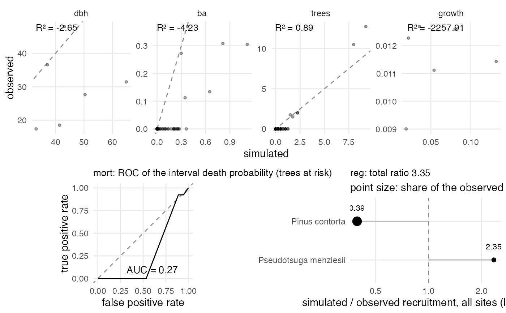
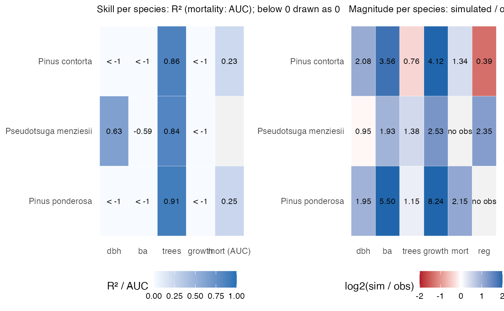
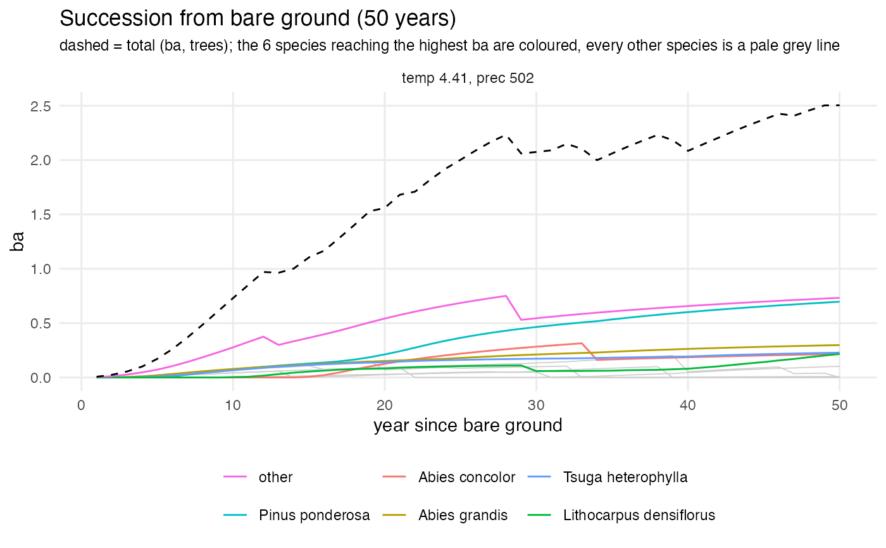

An optional step after fit() that simulates the model and returns what is
needed to judge it, as an object of class finn_evaluation with a print()
and a plot() method. The model keeps the same object as
model$evaluation; summary() prints it and
comparePlot() draws the same comparison from a simulation. Calling fit()
with its argument holdout runs it right after the fit.
Arguments
- model
- holdout
NULL(default) or a list with the holdoutdata(observations as forfit()), itsenvand itsinit_cohort, and optionallydisturbance(see finn_data for the four tables) andtree_data(the observed trees, as forfit(): adds the largest diameterdbh_maxto the comparison, seecomparePlot()). Withoutinit_cohortthe holdout sites start from bare ground, with a warning.- bare_ground
(
logical(1))
Run the bare-ground simulation too. DefaultFALSE.- years
(
integer(1))
Withbare_ground = TRUE: the length of the run in years, as insimulateForest(). Default500.- sites
With
bare_ground = TRUE, as insimulateForest():NULL(default) one run under the mean climate of all sites, or site ids for one run per site under that site's mean climate.- patches
(
integer(1))
Number of patches per site of a run that starts from bare ground;NULL(default) the patch count the model was fitted with (model$patches), or100for a model fitted before 0.2.0. Not used for a set with aninit_cohort: its patch count comes from the initial cohorts.- train
NULL(default): the training data the model keeps fromfit(). A list likeholdoutfor a model that keeps none (fitted before 0.2.0, e.g. read withtorch::torch_load()).- x
A
finn_evaluationobject, asevaluate()returns it.- species
(
logical(1))print(): also the skill per species. DefaultFALSE.- ...
print(): unused.plot(): for the comparison, the argumentsspecies,response,sitesandn_speciesofcomparePlot(); fortype = "bare_ground", passed toplot.finn_simulation().- type
plot():"scatter"(default) or"heatmap", the figures ofcomparePlot()from the stored comparison, or"bare_ground", the succession of the bare-ground runs (seeplot.finn_simulation()).- set
plot():"holdout"(default when there is one) or"train".
Value
An object of class finn_evaluation: a list with train and, when
given, holdout (each with the paired table matched and the skill
measures skill overall and skill_species per species; the measures are
described in summary.finn_class()), and with bare_ground = TRUE also
bare_ground (the simulation, as simulateForest() returns it) and
bare_ground_settings (years, sites, patches). print() shows the
skill tables; plot() draws the comparison (type = "scatter" or
"heatmap", as comparePlot()) or the bare-ground runs (type = "bare_ground"). The same object is kept on the model as
model$evaluation (a new call replaces it), where summary.finn_class()
reads it.
Details
Training data: the model is simulated from the training initial state under the training environment and compared with the observations it was fitted to, aggregated the way
fit()scores them (seecomparePlot()).Holdout (
holdout = list(data =, env =, init_cohort =)): the same on data the model has not seen, e.g. a spatially separate set of sites.Bare ground (
bare_ground = TRUE): the run ofsimulateForest(model, bare_ground = TRUE, years = , sites = ), from an empty stand foryearsyears under the mean climate of the fitted environment held constant, or under each site's mean climate withsites(seesimulateForest()). Optional, because a long run takes time.
Examples
library(data.table)
Nsp <- max(fia_obs_dt$species)
train <- 1:3; hold <- 4:5
init_tr <- makeInitCohorts(fia_init_trees[siteID %in% train], Nspecies = Nsp)
init_ho <- makeInitCohorts(fia_init_trees[siteID %in% hold], Nspecies = Nsp)
#> obsDF2arrays(): siteIDs are not 1:2; the site dimension follows their sorted order (kept as attribute "site_ids").
FINN.seed(1)
m <- finn(N_species = Nsp, recruits_dbh = 12.9,
growth_process = createProcess(~ temp + prec, growth),
mortality_process = createProcess(~ temp + prec, mortality),
regeneration_process = createProcess(~ temp + prec, regeneration_capped))
fit(m, data = fia_obs_dt[siteID %in% train], env = fia_env_dt[siteID %in% train],
init_cohort = init_tr, epochs = 2L, patches = 4, patch_size = 0.06,
plot_progress = FALSE)
#> ℹ weights: intercept-only baseline x your vector (dbh=0.00243, ba=12, trees=0.968, growth=1.84e+04, mortality=38.5, regeneration=0.768)
#> ℹ share of the objective at the intercept-only baseline (scaled): dbh=17%, ba=17%, trees=17%, growth=17%, mortality=17%, regeneration=17%
ev <- evaluate(m, holdout = list(data = fia_obs_dt[siteID %in% hold],
env = fia_env_dt[siteID %in% hold], init_cohort = init_ho),
bare_ground = TRUE, years = 50)
ev # the skill on the training data and the holdout
#> FINN evaluation
#> ===============
#>
#> Training data (observed vs simulated, aggregated as fit() scores):
#> response R2 correlation RMSE bias pred/obs n AUC deaths pred/obs
#> dbh -0.329 0.3343 23.3961 4.5968 1.07 20 NA NA
#> ba 0.454 0.8330 0.2129 0.0837 1.62 66 NA NA
#> trees 0.699 0.8470 0.5462 0.1326 1.28 66 NA NA
#> growth -21.558 0.1258 0.0342 0.0214 4.16 19 NA NA
#> mort -1.814 0.0674 0.0178 0.0143 4.53 19 0.67 4.7
#> reg -0.501 -0.1425 3.7185 1.1153 2.26 66 NA NA
#>
#> Holdout (observed vs simulated, aggregated as fit() scores):
#> response R2 correlation RMSE bias pred/obs n AUC
#> dbh -2.647 0.185 20.1136 15.0785 1.50 6 NA
#> ba -4.226 0.750 0.2120 0.1282 4.76 44 NA
#> trees 0.886 0.979 0.8283 0.2216 1.32 44 NA
#> growth -2257.911 0.215 0.0601 0.0457 4.97 6 NA
#> mort -1.339 -0.432 0.0161 0.0118 1.54 6 0.27
#> reg -0.470 0.106 6.0517 2.8979 3.35 44 NA
#> deaths pred/obs
#> NA
#> NA
#> NA
#> NA
#> 1.59
#> NA
#>
#> Bare ground: 50 years, 1 run(s); plot(x, type = "bare_ground") draws them.
plot(ev) # observed against simulated on the holdout

plot(ev, type = "heatmap") # the skill of every species

plot(ev, type = "bare_ground") # the bare-ground run

summary(m) # the model keeps the evaluation
#> FINN model summary
#> ==================
#>
#> ## Skill (observed vs simulated, aggregated as fit() scores)
#>
#> Training data:
#> response R2 correlation RMSE bias pred/obs n AUC deaths pred/obs
#> dbh -0.329 0.3343 23.3961 4.5968 1.07 20 NA NA
#> ba 0.454 0.8330 0.2129 0.0837 1.62 66 NA NA
#> trees 0.699 0.8470 0.5462 0.1326 1.28 66 NA NA
#> growth -21.558 0.1258 0.0342 0.0214 4.16 19 NA NA
#> mort -1.814 0.0674 0.0178 0.0143 4.53 19 0.67 4.7
#> reg -0.501 -0.1425 3.7185 1.1153 2.26 66 NA NA
#>
#> Holdout:
#> response R2 correlation RMSE bias pred/obs n AUC
#> dbh -2.647 0.185 20.1136 15.0785 1.50 6 NA
#> ba -4.226 0.750 0.2120 0.1282 4.76 44 NA
#> trees 0.886 0.979 0.8283 0.2216 1.32 44 NA
#> growth -2257.911 0.215 0.0601 0.0457 4.97 6 NA
#> mort -1.339 -0.432 0.0161 0.0118 1.54 6 0.27
#> reg -0.470 0.106 6.0517 2.8979 3.35 44 NA
#> deaths pred/obs
#> NA
#> NA
#> NA
#> NA
#> 1.59
#> NA
#>
#> ## Convergence
#> loss: fewer than 50 + 1 epochs recorded
#>
#> Parameters: how much they moved over the last 1 epochs (from the parameters of every epoch).
#> The change is the size of the step the values took, as a percentage of the size of the values:
#> 100 x |values now - values then| / |values then|, over all species of a parameter (or all weights
#> of a network layer). 1 % means the values moved by about a hundredth of their size.
#> process part moved most change
#> growth environmental response nn_growth.0.weight 2.48 %
#> mortality environmental response nn_mortality.0.weight 0.41 %
#> regeneration environmental response nn_regeneration.0.weight 3.29 %
#> regeneration recruit dispersion par_theta_recruits_raw 1.80 %
#> regeneration recruitment cap reg_logK 2.00 %
#>
#> ## Bare ground (mean of the last tenth of the run)
#> siteID total_ba leading_species leading_share years
#> 1 2.46 other 0.292 50
#>
#> ## Environment
#>
#> ### GROWTH
#>
#> Analytical ALE importance (rate-normalised) (species in columns):
#> variable Pseudotsuga menziesii Pinus ponderosa Pinus contorta Abies concolor
#> temp 0.399 0.0130 0.1680 0.000726
#> prec 0.127 0.0664 0.0344 0.117170
#> Abies grandis Tsuga heterophylla Tsuga mertensiana Lithocarpus densiflorus
#> 0.0575 0.00236 0.0790 0.21555
#> 0.0160 0.39059 0.0136 0.00208
#> Alnus rubra Abies amabilis other
#> 0.2772 0.245 0.05032
#> 0.0579 0.269 0.00242
#>
#> Average conditional effects (mean; species in columns):
#> variable Pseudotsuga menziesii Pinus ponderosa Pinus contorta Abies concolor
#> temp -0.01281 -0.00562 0.0945 0.00411
#> prec -0.00716 0.01291 -0.0424 -0.05122
#> Abies grandis Tsuga heterophylla Tsuga mertensiana Lithocarpus densiflorus
#> -0.01563 -0.00451 0.0316 0.06847
#> 0.00818 -0.05752 -0.0130 -0.00665
#> Alnus rubra Abies amabilis other
#> 0.0300 0.0259 -0.02392
#> 0.0136 0.0269 -0.00523
#>
#> ### MORTALITY
#>
#> Analytical ALE importance (rate-normalised) (species in columns):
#> variable Pseudotsuga menziesii Pinus ponderosa Pinus contorta Abies concolor
#> temp 0.546 0.779 0.176 0.184
#> prec 0.547 0.755 0.174 0.199
#> Abies grandis Tsuga heterophylla Tsuga mertensiana Lithocarpus densiflorus
#> 0.14 0.198 0.108 0.410
#> 0.14 0.202 0.108 0.407
#> Alnus rubra Abies amabilis other
#> 0.526 0.121 0.317
#> 0.529 0.122 0.317
#>
#> Average conditional effects (mean; species in columns):
#> variable Pseudotsuga menziesii Pinus ponderosa Pinus contorta Abies concolor
#> prec -0.000366 0.000358 -0.000293 -0.000399
#> temp 0.000366 -0.000358 0.000295 0.000391
#> Abies grandis Tsuga heterophylla Tsuga mertensiana Lithocarpus densiflorus
#> -0.000333 0.000305 0.000443 0.000377
#> 0.000333 -0.000302 -0.000442 -0.000379
#> Alnus rubra Abies amabilis other
#> 0.000412 0.000440 0.000354
#> -0.000410 -0.000439 -0.000354
#>
#> ### REGENERATION
#>
#> Analytical ALE importance (rate-normalised) (species in columns):
#> variable Pseudotsuga menziesii Pinus ponderosa Pinus contorta Abies concolor
#> prec 0.22654 0.0192 0.077905 0.1325
#> temp 0.00527 0.1221 0.000296 0.0508
#> Abies grandis Tsuga heterophylla Tsuga mertensiana Lithocarpus densiflorus
#> 0.1853 0.010758 0.391 0.1474
#> 0.0891 0.000402 0.196 0.0138
#> Alnus rubra Abies amabilis other
#> 0.0195 0.0893 0.06566
#> 0.2166 0.2260 0.00908
#>
#> Average conditional effects (mean; species in columns):
#> variable Pseudotsuga menziesii Pinus ponderosa Pinus contorta Abies concolor
#> prec -0.0868 -0.0185 0.05141 0.0595
#> temp 0.0134 0.0472 0.00318 0.0370
#> Abies grandis Tsuga heterophylla Tsuga mertensiana Lithocarpus densiflorus
#> -0.0658 -0.01162 -0.1195 0.0823
#> 0.0461 0.00226 -0.0851 -0.0252
#> Alnus rubra Abies amabilis other
#> 0.0284 -0.0493 -0.0467
#> -0.0946 -0.0788 0.0175